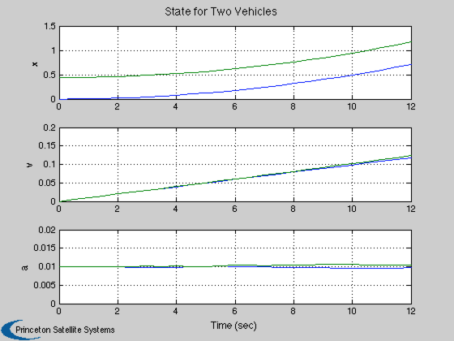
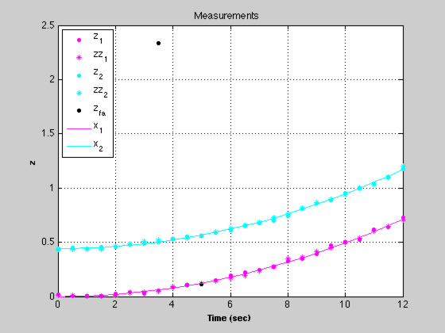
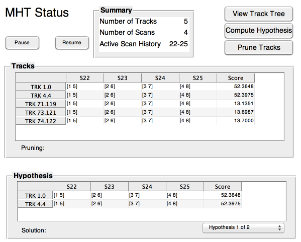
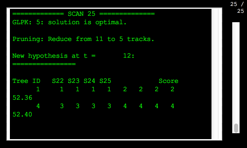
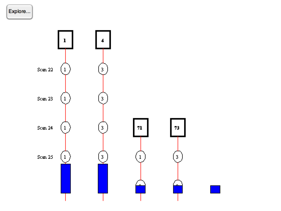
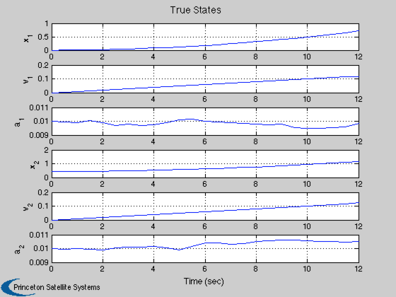
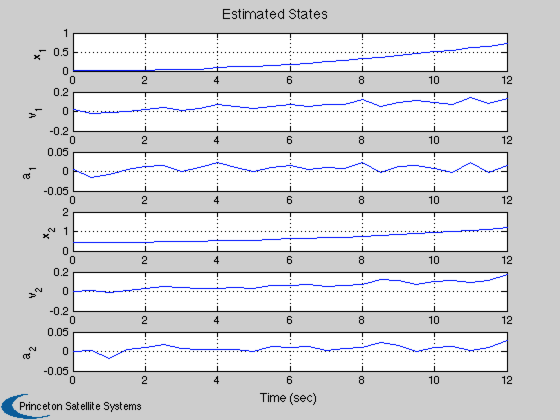

One dimensional MHT test, two vehicles, random accels, multiple sensors
The vehicles also have a steady acceleration. The vehicles start a distance apart determined by a uniform random number between 0 and 1.
Initially, we do not know how many vehicles we have. The plant model has a position, velocity and acceleration state.
The simulation includes missed measurements and false alarms. There can be up to 1 false alarm per scan.
False alarms and missed measurement use a uniform random number generator.
------------------------------------------------------------------------ See also DoubleIntegratorWithAccel, ScanToTrack1D ------------------------------------------------------------------------
Contents
------------------------------------------------------------------------- Copyright (c) 2013 Princeton Satellite Systems, Inc. All Rights Reserved. -------------------------------------------------------------------------
Initialize
-----------
% Set the seed for the random number generators. % If the seed is not set each run will be different. %--------------------------------------------------- seed = 45198; rng(seed); % Control screen output %---------------------- printHypotheses = 1; makePlots = 1; % Parameters %----------- n = 25; % Number of steps pFA = 0.1; % Probability of false alarm rFA = 1; % 1-sigma false alarm position relative to the % 1st vehicle r0 = 1e-2; % Measurement 1-sigma pMiss = 0.01; % Probability of a missed measurement dT = 0.5; % The time step aRand = 0.0001; % Random acceleration 1-sigma q0 = [0.02;0.2;0.04]; % The baseline plant covariance diagonal % without adding the random accelerations p0 = [0.2;0.9;1]; % Initial state covariance matrix diagonal % Initial state vector [x1;v1;a1;x2;v2;x2] %----------------------------------------- x0 = [0;0;0.01;0.1 + rand;0;0.01]; % The time vector %---------------- t = dT*(0:n-1); % The state transition matrices for the Kalman Filter %---------------------------------------------------- [a, b] = DoubleIntegratorWithAccel( dT ); % The random acceleration vector %------------------------------- u = aRand*randn(2,n);
Propagate the state vector
---------------------------
x = zeros(6,n); x(:,1) = x0; for k = 1:length(t)-1 x(:,k+1) = [a*x(1:3,k) + b*u(1,k);... a*x(4:6,k) + b*u(2,k)]; end % Measurements %------------- r = r0^2*eye(2); h = [1 0 0 0 0 0;0 0 0 1 0 0]; z = h*x + r0*randn(2,n); zz = h*x + r0*randn(2,n); % False alarms %------------- fA = rand(1,n); jFA = fA < pFA; tFA = t(jFA); zFA = rFA*randn(size(tFA)) + x(1,jFA); % Missed measurements %-------------------- fHit = rand(2,n); j1 = fHit(1,:) > pMiss; t1 = t(j1); j2 = fHit(2,:) > pMiss; t2 = t(j2); z1 = z(1,j1); z2 = z(2,j2); zz1 = zz(1,j1); zz2 = zz(2,j2); % Plot the simulation %-------------------- if( makePlots ) % Plot the simulation %-------------------- [t, tL] = TimeLabl(t); Plot2D(t,x,tL,{'x' 'v' 'a' },'State for Two Vehicles','lin',{'[1 4]' '[2 5]' '[3 6]'}); set(gca,'ylim',[0 0.02]); % Plot the measurements and positions %------------------------------------ NewFig('Measurements') plot(t1,z1,'m.',t1,zz1,'m*'); hold on plot(t2,z2,'c.',t2,zz2,'c*'); plot(tFA,zFA,'k.'); plot(t,x(1,:),'m-') plot(t,x(4,:),'c-') XLabelS(tL) YLabelS('z') TitleS('Measurements') grid if( ~isempty(zFA) ) legend('z_1', 'zz_1', 'z_2', 'zz_2', 'z_{fa}', 'x_1', 'x_2','location','northwest') else legend('z_1', 'zz_1', 'z_2', 'zz_2', 'x_1', 'x_2','location','northwest') end end 
Create the MHT code
--------------------
% The covariances %---------------- r = r(1,1); p = diag(p0); q = diag([0.5*aRand*dT^2;aRand*dT;aRand].^2 + q0); % Create the Kalman Filter data structure %---------------------------------------- f = KFInitialize( 'kf', 'm', [0;0;0], 'x', [0;0;0], 'a', a, 'b', b, 'u',0,... 'h', h(1,1:3), 'p', p, 'q', q,'r', r ); [mhtData, trk] = MHTInitialize( 'probability false alarm', 0.001,... 'probability of signal if target present', 0.999,... 'probability of signal if target absent', 0.001,... 'probability of detection', 1, ... 'measurement volume', 1.0, ... 'number of scans', 3, ... 'gate', 0.2,... 'm best', 2,... 'number of tracks', 1,... 'scan to track function',@ScanToTrack1D,... 'scan to track data',struct('v',0),... 'distance function',@MHTDistance,... 'hypothesis scan last', 0,... 'prune tracks', 1,... 'filter type','kf',... 'filter data', f,... 'remove duplicate tracks across all trees',1,... 'average score history weight',0.01,... 'create track', ''); % Add false alarms %----------------- zFA(jFA) = zFA; nT = zeros(1,n); % Size arrays %------------ m = zeros(3,n); p = zeros(3,n); scan = cell(1,n); b = MHTTrkToB( trk ); TOMHTTreeAnimation( 'initialize', trk ); TOMHTTreeAnimation( 'update', trk ); % Initialize MHT GUI %------------------- MHTGUI; MLog('init') MLog('name','MHT 1D Demo') t = 0; sensorType = 1; sensorID1 = 1; sensorID2 = 2; for k = 1:n % Get the measurements if they exist %----------------------------------- if( j1(k) ) zScan = AddScan( z(1,k), sensorType, sensorID1 ); zScan = AddScan( zz(1,k), sensorType, sensorID2, [], zScan ); else zScan = []; end if( j2(k) ) zScan = AddScan( z(2,k), sensorType, sensorID1, [], zScan ); zScan = AddScan( zz(2,k), sensorType, sensorID2, [], zScan ); end % Add false alarms %----------------- if( jFA(k) ) zScan = AddScan( zFA(k), [], [], [], zScan ); end % Manage the tracks %------------------ [b, trk, sol, hyp, mhtData] = MHTTrackMgmt( b, trk, zScan, mhtData, k, t ); % Display hypothesis %------------------- if(printHypotheses) MHTHypothesisDisplay( hyp, trk, k, t ); end % Update MHTGUI display %---------------------- MHTGUI(trk,sol,'hide'); % A guess for the initial velocity of any new track %-------------------------------------------------- for j = 1:length(trk) mhtData.fScanToTrackData.v = mhtData.fScanToTrackData.v + trk(j).m(1); end mhtData.fScanToTrackData.v = mhtData.fScanToTrackData.v/length(trk); % Animate the tree %----------------- if( ~isempty(zScan) && makePlots ) TOMHTTreeAnimation( 'update', trk ); end t = t + dT; end  
Plot the results
-----------------
if( makePlots ) [t,tL] = TimeLabl((0:(n-1))*dT); yL = {'x_1' 'v_1' 'a_1' 'x_2' 'v_2' 'a_2'}; Plot2D(t,x(1:6,:),tL,yL,'True States'); if(~isempty(hyp)) xE = [trk(hyp(1).trackIndex(1)).mHist; trk(hyp(1).trackIndex(2)).mHist]; Plot2D(t,xE,tL,yL,'Estimated States'); end end %-------------------------------------- % PSS internal file version information %-------------------------------------- 